أولا: المشروعات
الاشراف العام علي تنفيذ ومتابعة المشروعات المشتركة بين محافظة الوادي الجديد وهيئة تنمية الصعيد والاشراف علي استكمال الاجراءات التنفيذية والإدارية اللازمة لدفع معدلات الانجاز وتحقيق المستهدف:
1- مجمع التموربالشراكة مع القطاع الخاص
- استكمال تشغيل وتطوير مجمع التمور وتعظيم القيمة المضافة للمنتجات وزيادة قدرتها على النفاذ للأسواق.
- دعم تكتل التمور وتفعيل الاستفادة من برامج منظمة اليونيدو.
- استكمال إجراءات إنشاء عدد 2 مجمع للصناعات الغذائية بالتعاون مع القطاع الخاص.
2- مصنع شكائر الزماط
المصنع مقام على مساحة 1000م² بطاقة تصل إلى 1.5 مليون شكارة سنويًا، بهدف توطين صناعة مستلزمات النخيل ودعم قطاع التمور
يوفر المشروع نحو 60 فرصة عمل للسيدات المعيلات ويضم 50 ماكينة خياطة حديثة بالإضافة الي وحدتين قص كهربائيتين .
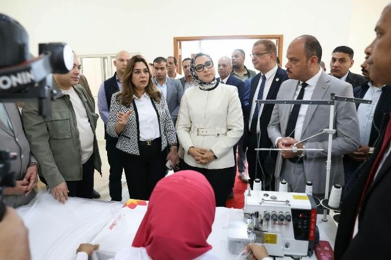
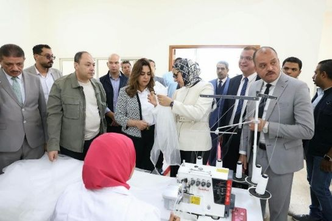
3 - الجذب السكاني
- تم رفع كفاءة عدد ( 1393 ) وحدة سكنية ، وكذا رفع كفاءة المنشآت الخدمية ( مدرسة ، وحدة صحية ، نقطة اسعاف ، .... )
- جارى التعاقد مع شركة انجازات لترفيق 450 فدان في ابو طرطور اراضي للزراعة تمهيدا لتوزيعها على المواطنين من محافظات ( كفر الشيخ ، الغربية ، المنوفية ) بواقع خمس أفدنة ، ووحدة سكنية لكل شاب )
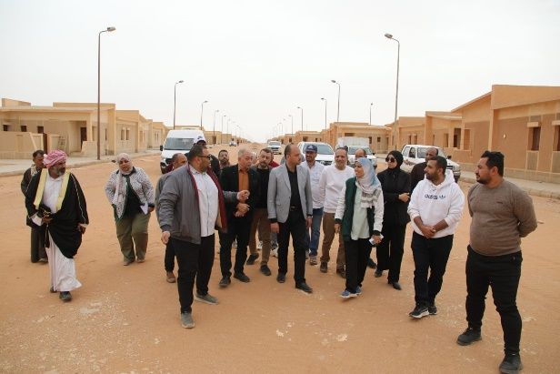
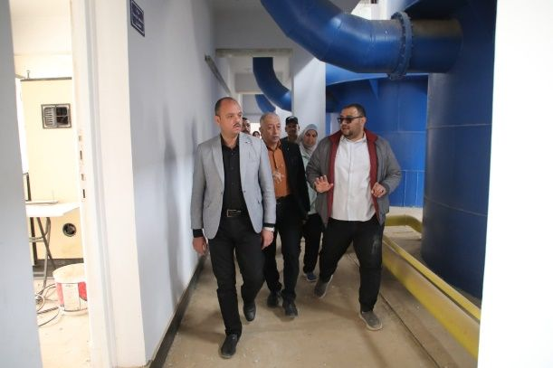
4 - مجمع التمور والثلاجات بالمجمع الصناعى بالداخلة والخارجة
- تم وضع حجر الأساس لمجمع التمور والثلاجات بالمجمع الصناعي بالداخلة، لدعم التنمية الصناعية وتعزيز التكامل بين الأنشطة الزراعية والصناعية.
- تنفيذ خطة لإقامة مجمعين للصناعات الغذائية بمركزي الداخلة والخارجة، بمساحة 50 فدانًا لكل مجمع. اجمالى (100) فدان
- تنفيذ المشروعين بالشراكة بين هيئة تنمية الصعيد وإحدى مؤسسات القطاع الخاص، وفق نظام المطور الصناعي.
- توفير البنية التحتية والخدمات المركزية اللازمة لدعم الأنشطة الصناعية وتيسير إقامة المشروعات.
- تعزيز استثمار الموارد المحلية ودعم المشروعات الإنتاجية التي تحقق قيمة مضافة للمنتجات الزراعية، وتسهم في توفير فرص عمل مستدامة لأبناء الصعيد
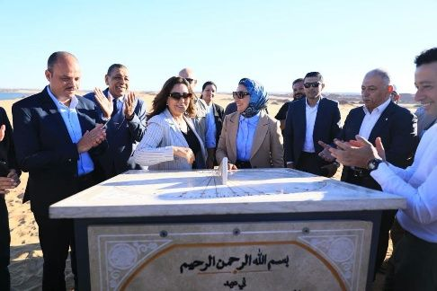
رئيس مجلس إدارة مركز معلومات شبكات المرافق الاشراف العام علي أعمال المركز وكافة اختصاصاته
1- مركز معلومات شبكات المرافق والتخطيط العمراني
هو كيان مختص بكافة اعمال البنيه التحتيه واستخراج التصاريح اللازمه للبنيه التحتيه للمحافظه سواء تصاريح حفر ـ خرائط نوعيه ـ اعمال الرفع المساحي بكافة انواعها ( تقنين، رفع مساحي خاص بالتصاريح)ـ ولجان فض النزاعات ـ والتنسيق بين الجهات المعنيه في اعمال البنيه التحتيه المشتركه
مقاومات الجهاز:
اولا اجهزه مساحيه:
(عدد ١ جهاز GPR- عدد ٢ جهاز RTK- عدد ٣ اجهزه كشف معادن- عدد ٣ اجهزه كشف كابلات- عدد ٣ اجهزه total station-
عدد ٣ اجهزه GPS هاند)
ثانيا الكوادر البشريه:
(عدد ٩ مهندسين - عدد ٣ فنين - عدد ٦ ادارين)
- تم اعتماد مركز الشبكات من المساحة المدنية بتاريخ 30/7/2026 والتعاقد مع المساحة على قيام المركز بأعمال الرفع المساحي للتقنين على قانون 168 لسنة 2025 لمركز الداخلة
- جارى العمل حاليا بالمقر الجديد والدائم بالمركز لإنهاء اعمال التطوير ورفع كفاءته لنقل المركز اليه
- استقبل الجهاز نحو 500 طلب متنوع من تصاريح حفر وتوصيل مرافق وأعمال رفع مساحي، بإجمالي متحصلات مالية تقدر بنحو 600 ألف جنيه.
- وفي مجال الرفع المساحي الخاص بالتقنين، استقبل الجهاز 180 ملفًا، تم تنفيذ الرفع المساحي لـ 47 ملفًا، وجارٍ التحضير لتنفيذ 73 ملفًا
إجمالي الإيرادات المسجلة
إجمالي الإيرادات الواردة من 19/5/2026 حتي 30/10/2026 بجميع مراكز المحافظة 1359618.8 جنيه
| النسبة من الإجمالي | الإيرادات بالجنيه | شهر 10 | شهر 9 | شهر 8 | شهر 7 | شهر 5 و 6 | المركز |
|---|---|---|---|---|---|---|---|
| 42.90% | 637905 | 204155 | 111380 | 167835 | 83650 | 71885 | الديوان العام |
| 25.24% | 375400 | 98400 | 80000 | 63000 | 102000 | 33000 | الخارجة |
| 19.63% | 291891 | 28626 | 227540 | 27075 | 4325 | 0 | بلاط |
| 5.35% | 79496 | 7200 | 14125 | 14160 | 22085 | 21926 | الداخلة |
| 1.95% | 29000 | 3000 | 4000 | 10000 | 10000 | 2000 | باريس |
| 4.94% | 73423 | 73423 | 0 | 0 | 0 | 0 | الفرافرة |
| 100% | 1487114.8 | 414803.8 | 437045 | 282070 | 222060 | 128811 | الإجمالي |
(الجزء الخاص بملف التقنين)
- اجمالي الثوابت التي تم انشائها حتي تاريخه وتم ربطها بالجيوديسيا
- عدد 1 ثابت بمركز الخارجه
- عدد 8 ثوابت بمركز الداخله
- إجمالي الطلبات 736 طلب
| النسبة من 736 | عدد الملفات | مرحلة العمل |
|---|---|---|
| 29.46% | 203 | تم الرفع مساحي |
| 24.53% | 169 | المقبول جيوديسيًا |
| 2.03% | 14 | المرفوض جيوديسيًا |
| 16.40% | 113 | المقبول في المراجعة |
| 0.58% | 4 | الجاري مراجعته |
| 2.61% | 18 | المرفوض في المراجعة |
| 1.45% | 10 | تعذر الرفع |
ابرز الاعمال والتصاريح:
- تصاريح الحفر والمعاينات: حفر الأساسات، وخطوط المياه والصرف الصحي، وتوصيلات المرافق، ومعاينات مواقع الحفر.
- أعمال الرفع المساحي: رفع الإحداثيات لطلبات المواطنين والشركات.
- توصيلات المرافق: معاينات وتركيب عدادات المياه، والخطوط الفرعية، والإحلال والتجديد.
- أعمال التقنين: الفحص الجيوديسي ومراجعة الملفات والبت في قبولها أو رفضها في كل مرحلة.
- اعمال متابعة 3 مقاول خاص بشركة المياه والصرف
- اعمال متابعة خطة الطرق بجميع المراكز
- اعمال متابعة اعمال رد الشيئ لاصله بخطوط الغاز
- اعمال متابعة اعمال الغاز
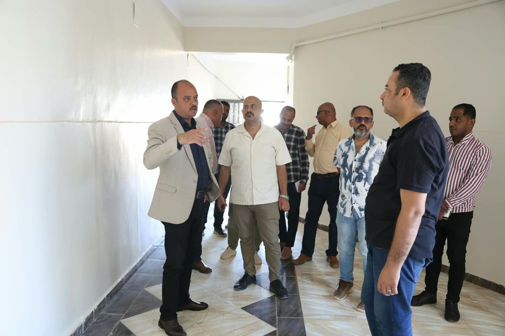
الاشراف العام علي مبادرة حياه كريمة المرحلة الأولي – الثانية
(حياة كريمة)
أ-الغابات الشجرية
مشروعات مياه الشرب والصرف الصحي منتهية بنسبة ١٠٠% منذ عام ولم تدخل الخدمة للأسباب الاتية:
ا- عدم طرح الغابات الشجرية لاستفادة من مياة الصرف الصحي بعد المعالجة
ب - عدم وجود محطة رفع المياة المعالجة
الإجراءات التي تم اتخاذها
- تم وضع شرط ضمن كراسة شروط بأن يقوم المستثمر بشراء مواتير الرفع وضخ المياة لمحطة لرفع لاستفادة من المياه المعالجة لحل مشكلات الصرف الصحي بمركز الفرافرة
جاري طرح عدد 3 غابة شجرية
أولاً: الفكرة والهدف
استغلال مياه الصرف الصحي المعالَجة بزراعة غابات شجرية حول محطات المعالجة، لتحقيق أقصى استفادة من المياه وتقليل الأثر البيئي، ضمن مبادرة «حياة كريمة». وقد جاءت الفكرة بعد توقف تشغيل بعض المحطات لغياب غابات جاهزة، فتقرر طرح الغابات المحيطة على المستثمرين كحلٍّ جذري.
ثانياً: الوضع الحالي (بيانات بتاريخ 23/9/2026)
بيان بالغابات الشجرية بالمحافظة — كما ورد من الإدارة العامة لشئون البيئة:
| ملاحظات | طريقة الري | نوع الري | تصرف المحطة يوم / م³ | المساحة المخصصة | اسم الغابة | المركز | م |
|---|---|---|---|---|---|---|---|
| منزرعة | ري بالتنقيط | صرف صحي | 10000 | 310 فدان | الخارجة | الخارجة | 1 |
| منزرعة | ري بالتنقيط | صرف صحي | 12000 | 270 فدان | (موط) | الداخلة | 2 |
| كانت تعمل وتوقفت | ري بالتنقيط | صرف صحي | 3000 | 118 فدان | الراشدة | الداخلة | |
| يوجد قرار تخصيص وغير منزرعة | غير منزرعة | صرف صحي | 2500 | 10 فدان | القصر | الداخلة | |
| يوجد قرار تخصيص وغير منزرعة | غير منزرعة | صرف صحي | 2000 | 10120 م² | الشيخ مفتاح | الداخلة | |
| كانت تعمل وتوقفت | ري بالتنقيط | صرف صحي | 1500 | 50 فدان | باريس | باريس | 3 |
| تم تسليم الأرض وجارٍ الزراعة | ري بالتنقيط | صرف صحي | 700 | 300 فدان | أبومنقار | الفرافرة | 4 |
| تم تسليم الأرض وجارٍ الزراعة | ري بالتنقيط | صرف صحي | 1000 | 80 فدان | عمر بن الخطاب | الفرافرة | |
| تم تسليم الأرض وجارٍ الزراعة | ري بالتنقيط | صرف صحي | 1000 | 11 فدان | عائشة عبدالرحمن | الفرافرة | |
| جارٍ الإسناد بالأمر المباشر | ري بالتنقيط | صرف صحي | 1000 | 78 فدان | اللواء صبيح | الفرافرة | |
| جارٍ الإسناد بالأمر المباشر | ري بالتنقيط | صرف صحي | 1000 | 127 فدان | الشيخ مرزوق | الفرافرة | |
| جارٍ الإسناد بالأمر المباشر | ري بالتنقيط | صرف صحي | 1000 | 114 فدان | الكفاح | الفرافرة | |
| لا يوجد غابات شجرية بالمركز | — | — | — | — | — | بلاط | 5 |
ثالثاً: أبرز التحديات
- توقف غابتي الراشدة (الداخلة) وباريس عن العمل رغم أنهما كانتا تعملان فعلاً.
- تأخر زراعة غابتي القصر والشيخ مفتاح (الداخلة) رغم صدور قرار تخصيصهما، وعدم استلام شركة المياه لمشروعات الفرافرة المنتهية نهائياً رغم اكتمال التنفيذ 100%.
- عدم وجود أي غابة شجرية بمركز بلاط حتى الآن.
- تفاوت نوعية التربة بين المحطات، ما يستلزم متابعة ملاءمة الأشجار لكل موقع.
رابعاً: الإجراءات والتوجيهات
- معاينة غابتي الراشدة وباريس وتحديد أسباب التوقف لإعادة تشغيلهما.
- الإسراع بزراعة غابتي القصر والشيخ مفتاح بعد صدور قرار التخصيص لهما.
- استكمال إجراءات الإسناد بالأمر المباشر وتوقيع العقود لغابات اللواء صبيح والشيخ مرزوق والكفاح بالفرافرة.
- متابعة ري الغابات المسلَّمة حديثاً بالفرافرة (أبومنقار، عمر بن الخطاب، عائشة عبدالرحمن).
- استلام شركة مياه الشرب والصرف الصحي لمشروعات الفرافرة المنتهية، ودخولها الخدمة.
- دراسة إمكانية استحداث غابة شجرية بمركز بلاط.
«من مياهٍ معالَجة ... إلى رئةٍ خضراء» — نموذجٌ للتنمية المستدامة من ثمار «حياة كريمة»
ب- مجمعات خدمات المواطنين
- تم التنسيق مع منسق عام حياة كريمة بوزارة التنمية المحلية د/ ولاء لتوفير الأجهزة التكنولوجيا لمجمعات الخدمات وتم وصول كافة الأجهزة التكنولوجية لعدد ٦ مجمع خدمات بالفرافرة
- تم التنبيه على مدير عام التضامن ومدير عام التموين بتوفير العمالة لتأدية خدمات المواطنين
ج- نقاط الإطفاء
- تم طرح عملية شراء السيارات الإطفاء جلسة ١٥/٩/٢٠٢٦ وسيتم تشغيل نقاط الإطفاء فور وصول السيارات
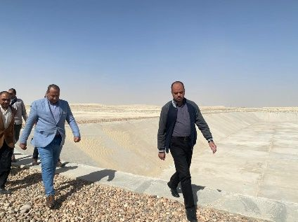
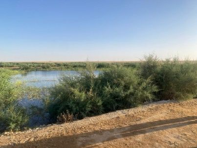
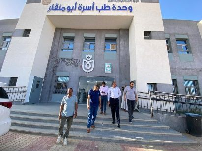
الاشراف العام علي صنع تدوير المخلفات الزراعية بالشراكة مع هيئة تنمية الصعيد
مصنع تدوير المخلفات
أولا : التحديات :
- المصنع مؤجر لشركة كراست منذ ٢٠١٨ ويتم تصنيع سوبر فوسفات فقط والمفارم والمعدات عاطلة ولا يتم الفرم ولا الاستفادة من المخلفات الزراعية
ثانيا : الإجراءات والتوجيهات :
- تم المرور عدة مرات وصيانة المفرمة الكبيرة وتم شراء مفارم حديثة وثم البدء في فرم المخلفات الزراعية والتخلص من مخلفات الجريد الجافة للاستعداد لاستقبال مخلفات جديدة
- تم تركيب عدد ٤ فرن وتجهيزات لإدخال خط إنتاج الوقود الحيوي وود بليتس
- تم تفقد المصنع من وزيرة التنمية المقام على مساحة6.5 فدان بطاقة استيعابية 32 طنًا يوميًا، للوقوف على آليات تحويل المخلفات الزراعية إلى منتجات ذات قيمة مضافة كالفحم الحيوي، والوقود البديل، والأسمدة العضوية، ووسائط ترشيح المياه
- التأكيد على رفع كفاءة التشغيل وتعظيم الاستفادة من إمكانات المصنع، مع التركيز على التوسع في تدريب وتأهيل شباب الخريجين للعمل في مجالات تدوير المخلفات والصناعات الخضراء
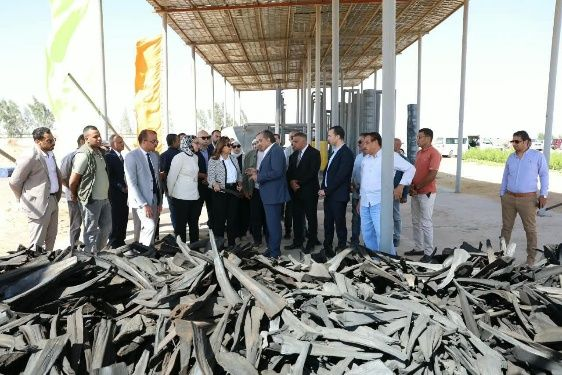
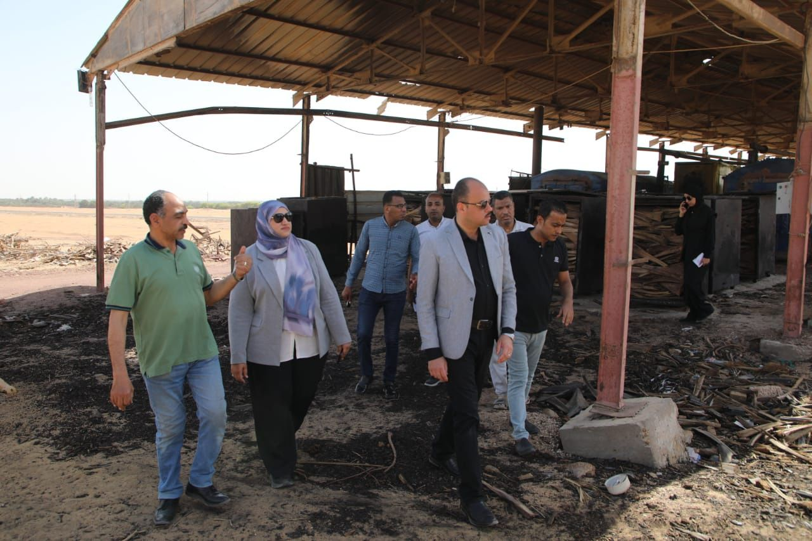
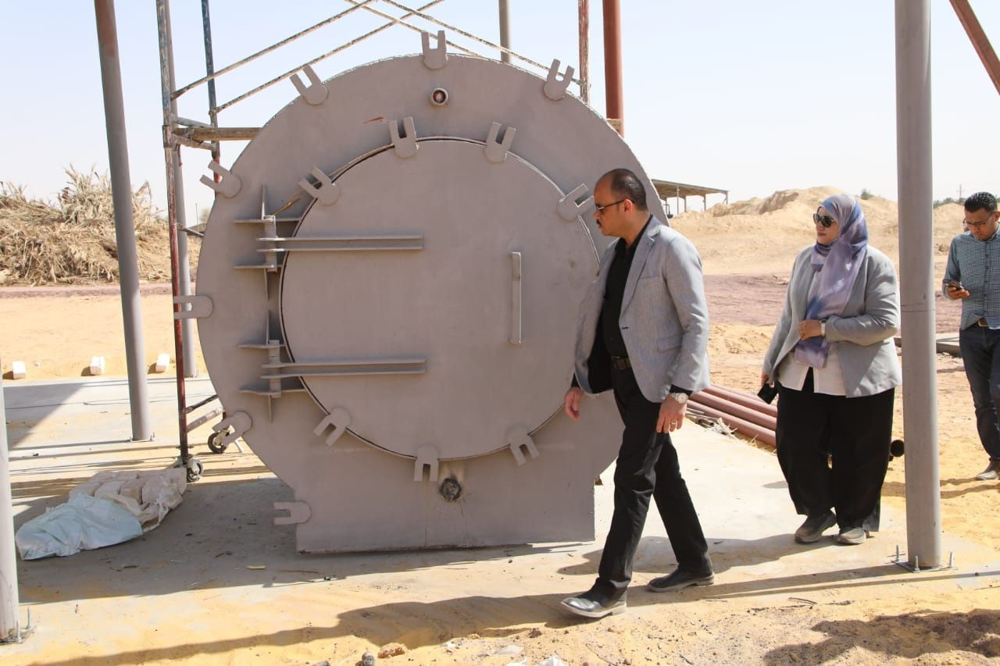
الاشراف العام علي انهاء إجراءات أعمال تطوير ورفع كفاءة مطار الداخلة ومهبط الفرافرة
مطار الداخلة – مهبط الفرافرة
- التنسيق مع الهيئة الهندسية للقوات المسلحة والبدء في أعمال تطوير ورفع كفاءة مطار الداخلة تمهيدًا لإعادة تشغيله في بداية العام القادم 2027 .
- إعداد تصور لتطوير ورفع كفاءة مهبط الفرافرة والتوجه نحو تحويله إلى مطار يخدم الاستخدامين المدني والعسكري خلال من 2 – 3 سنوات
الإشراف العام ومراجعة البروتوكول وأعمال الانشاءات مع صندوق مكتبات مصر
مكتبة مصر العامة بالداخلة
- تم عمل بروتوكول مع صندوق مكتبات مصر العامة والبدء في ضخ 25 مليون جنيه لبدء اعمال الانشاءات
الاشراف العام علي محطات المياه والصرف الصحي بالمحافظة
محطات مياه الشرب والصرف الصحي
أ. قطاع مياه الشرب:
- استكمال 14 محطة مياه ضمن منظومة الآبار اللازمة لها (تم الاستلام الابتدائي لمحطتين): بتكلفة 380 مليون جنيه.
- إنشاء 15 محطة تنقية مياه لإزالة الحديد والمنجنيز (تم إنجازها ودخولها الخدمة): بتكلفة 222 مليون جنيه.
ب. قطاع الصرف الصحي:
- مشروع توسعات معالجة صرف صحي بمدينة موط: جاري التنفيذ بتكلفة 325 مليون جنيه.
- مشروع صرف صحي مدينة باريس: جاري التنفيذ بتكلفة 168 مليون جنيه.
- مشروع صرف صحي لعدد 3 قرى (تنيدة – أولاد عبد الله – العوينة): بتكلفة 163 مليون جنيه.
- مشروعات المبادرة الرئاسية "حياة كريمة" بمركز الفرافرة (6 محطات معالجة، 16 محطة رفع، 17 خط طرد، 26 خط انحدار، مع طرح 4 غابات شجرية تمهيداً للتشغيل).
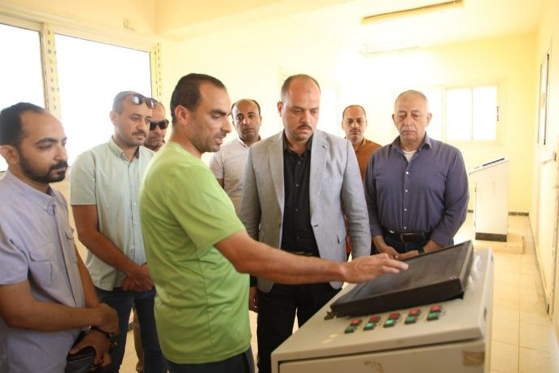
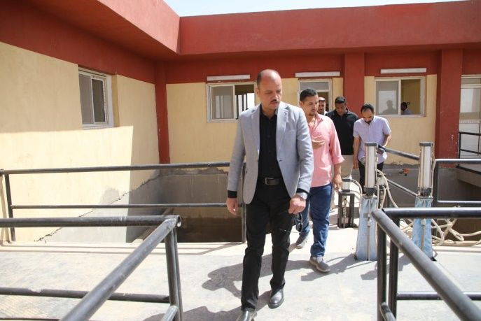
الاشراف العام علي بناء 5 مساجد بواقع مسجد بيئي بكل مركز
مساجد تعكس الهوية البصرية -مواقع تجميع مخلفات النخيل
- اعتماد تنفيذ ( 5 ) مساجد بنمط معماري بيئي يتناسب مع طبيعة وبيئة المحافظة، من خلال الهيئة الهندسية للقوات المسلحة وتمويلها، مع استكمال التنفيذ خلال المرحلة القادمة وتم تسليم أول موقع بمدينة الخارجة بالفعل للهيئة الهندسية للقوات المسلحة لبدء التنفيذ
- تم اختيار مواقع بمدن وقري المحافظة لتجميع مخلفات النخيل
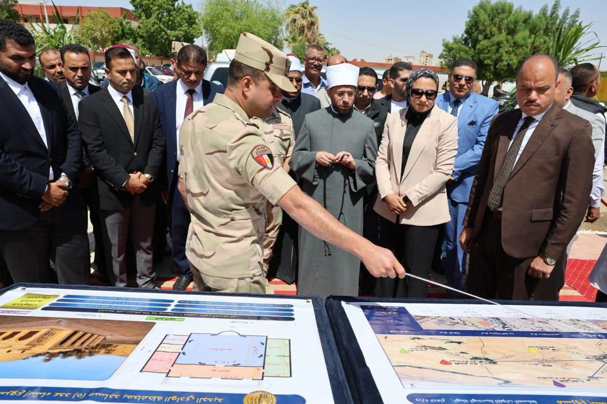
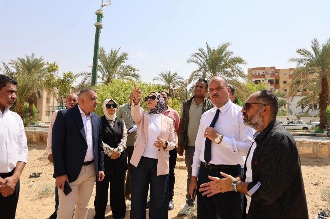
العام على المشرف
مشروعات صقر و اصطفاف معدات وسيارات الطوارئ والإغاثة بمحافظة الوادي الجديد
أولا: الإجراءات المتخذة
- متابعة اصطفاف معدات وسيارات الطوارئ والإغاثة التابعة للوحدات المحلية والمديريات الخدمية والجهات المعنية بمدينة الخارجة.
- فحص مدى الجاهزية الفنية والتشغيلية للمعدات والسيارات، والتأكد من استعداد الأطقم البشرية والفنية للتعامل الفوري مع الأزمات والطوارئ.
- التأكيد على أهمية سرعة الاستجابة والتحرك، واستمرار رفع درجة الاستعداد والتنسيق بين الجهات المعنية.
- متابعة تنفيذ محاكاة للتعامل مع الأزمات والطوارئ من خلال الشبكة الوطنية للطوارئ والسلامة العامة، للوقوف على كفاءة منظومة الاستجابة والتنسيق بين الجهات المشاركة.
ثانيًا : نتائج المشروع
- التأكد من جاهزية عدد 95 سيارة ومعدة متنوعة، و من كفاءتها التشغيلية واستعدادها للتعامل مع المواقف الطارئة.
- الوقوف على مدى استعداد الأطقم الفنية والبشرية وسرعة الاستجابة للبلاغات والسيناريوهات الطارئة.
- التأكيد على استمرار الجاهزية الدائمة للمعدات والسيارات، ومواصلة التنسيق بين الجهات المعنية، وإجراء التدريبات والمحاكاة الدورية لتعزيز كفاءة التعامل مع الأزمات والطوارئ.
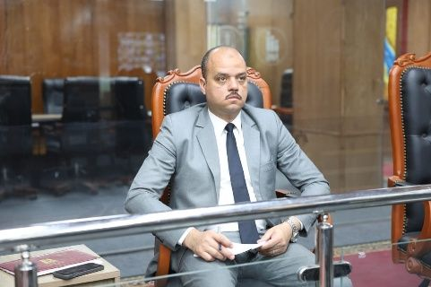
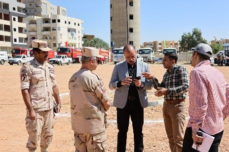
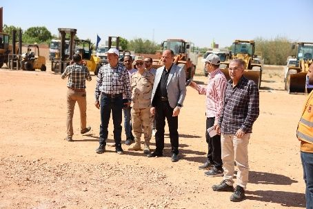
المــلفــــات
1- ملف التقنين
- نسبة المحافظة بتاريخ 18/2/2026(77%) نتيجة إضافة عدد (892) ملف تابع لهيئة التعمير والتنمية الزراعية وتم العمل على انهاء الملفات حيث وصلت النسبة (97.53%) بتاريخ 18/10/2026
- نسبة ارفاق العقود القديمة بتاريخ 17/2/2026 كانت 29% نتيجة عدم ارفاق (1209) عقد تم الانتهاء منها حيث وصلت النسبة الى (99.99%) بتاريخ 18/10/2026
- إجمالي ما تم تحريره من عقود من 17/2/2026 حتى 18/10/2026 عدد (2739) عقد وتحويل عدد (361) حالة لما عاد من نفع وتقدموا للتصالح وفقا لقانون 168 لسنة 2025
- بالنسبة لقانون 168 لسنة 2025 تقدم في اليوم عدد (13338) طلب على المنصة الوطنية لتقنين أراضي الدولة
2- ملف التصالح
- منذ بداية المنظومة حتى 16/2/2026 إجمالي عدد الطلبات (1953) طلب، إجمالي اعمال البت ( 1948)، إجمالي المتحصلات (٢٠,٤٨٨,٩٨٩)
- بتاريخ 16/2/2026 حتى 18/10/2026 اجمالي عدد الطلبات (2276) ، اجماي اعمال البت (2256) إجمالي المتحصلات (26.816.000)
3- ملف المتغيرات
| الفترة | عدد المتغيرات | تم الرد | جاري الرد | حالات قانونى مؤقت | غير قانونى |
|---|---|---|---|---|---|
| 16/2/2026 | 10918 | 10898 | ٠ | 138 | 87 |
| 18/10/2026 | 1849 | 1834 | 15 | ٠ | 41 |
- تم تحويل عدد 319 حالة من قانوني مؤقت الى قانونى
- كما تم تحويل عدد 301 حالة من غير قانونى الى قانونى
4- ملف المحال العامة
| الفترة | عدد الطلبات | منتهى | ملغى ومرفوض | |
|---|---|---|---|---|
| من | الى | |||
| 11/12/2022 | 16/2/2026 | 1239 | 451 | 248 |
| 11/2/2022 | 18/10/2026 | 1639 | 861 | 323 |
5- الخطة الاستثمارية
- حتى 16/2/2026 إجمالي المنفذ من مشروعات الخطة (230.234) ألف جنيه بنسبة 45%
- حتى 30/6/2026 إجمالي المنفذ من مشروعات الخطة (510.910) ألف جنيه بنسبة 100%
- من 1/7/2026 حتى تاريخه تم تمويل المحافظة بمبلغ (٨٨) مليون جنيه كمرحله اولي اي بنسبه ١٧٪ من اجمالي الخطة وتم توزيعها علي المراكز لتمويل مشروعات تم طرحها وجاري طرح باقي الخطة
- حتى 18/10/2026 إجمالي المنفذ من مشروعات الخطة (84) مليون جنيه بنسبة 95.45%
6- المراكز التكنولوجية
في الفترة من 18/2/2026 حتى 18/10/2026
- تم تلقي (54185) طلب بالمراكز التكنولوجية بالمحافظة
- تم نهو (51932) طلب و متبقي قيد الاجراء في الموعد (2253) طلب بنسبة انجاز96% .
- بالإضافة الى انهاء عدد (2200) طلب متأخر من الفترة السابقة .
بالنسبة للمتحصلات:
- بتاريخ 1/1/2019حتى 16/2/2026بلغ إجمالي المتحصلات 2.073.524.285
- من 16/2/2026 حتى 18/10/2026 بلغ إجمالي المتحصلات 495.290.035
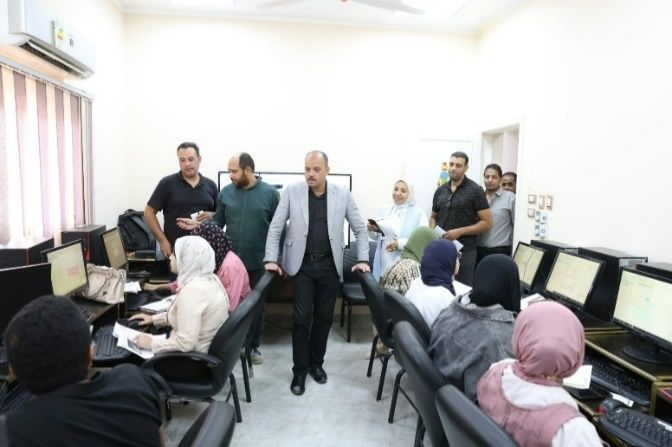
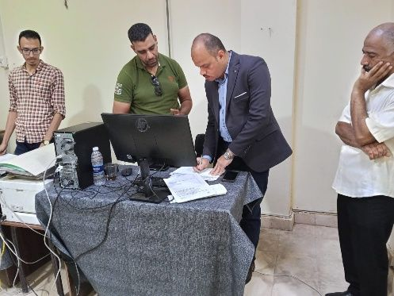
- تم عقد عدد 50 اجتماع وجولة لمتابعة سير العمل فى ملفات انفاذ القانون (التقنين-التصالح -المراكز التكنولوجية- المتغيرات المكانية-الخطة الاستثمارية(
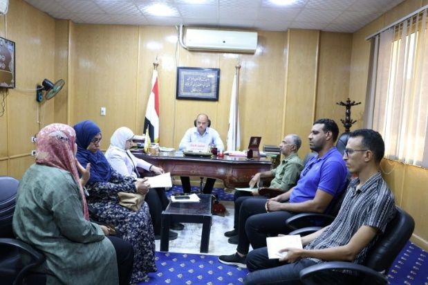
المبادرات واللجان
أولا المبادرات
- "أهلًا رمضان" بقرية بغداد بمركز باريس
- المبادرة الوطنية للمشروعات الخضراء الذكية "برئاسة د/منال عوض "
- مبادرة " أنا متعلم مدى الحياة"
- مبادرة (بيت العائلة المصرية)
- مبادرة الرئاسية "الألف يوم الذهبية"
- مبادرة «عظمة وجلال مصر»
- مبادرة حياة كريمة "المرحلة الاولى بمركز ومدينة الفرافرة
- حملة التبرع بالدم تحت شعار<<تبرعك حياة>>
ثانيا اللجان
- رئيس اللجنة العليا لحصر المنشآت والكيانات غير المرخصة بالمحافظة
نتائج اللجنة
بحصر المنشآت والكيانات غير المرخصة التي تمارس نشاطًا (صناعي - تجاري - خدمي) بنطاق محافظة الوادي الجديد، وعددها (124) منشأة
- رئيس اللجنة العليا للعيد القومي للمحافظة
أبرز النتائج: زيارة وزيرة التنمية المحلية واعتماد كهف الجارة كمحمية طبيعية
- رئيس اللجنة العليا للمعرض الزراعي النسخة الثالثة (اجي اجري )
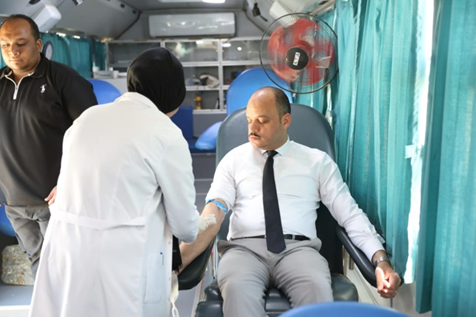
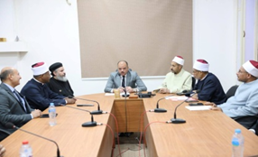
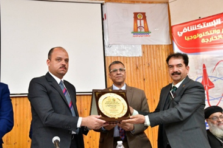
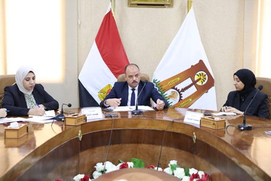
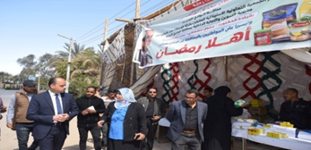
1- قطاع الزراعة والاستثمار الزراعى
اولا الاستثمار الزراعي وآفاق التوسع
- إجمالي الأراضي الممنوحة للمستثمرين حتى ١٩ مايو ٢٠٢٤: ٩١٦ ألف فدان.
- الأراضي الممنوحة للمستثمرين المصريين: ٨٧٦ ألف فدان.
- الأراضي الممنوحة للمستثمرين الأجانب: ٤٠ ألف فدان.
- المساحة المزروعة فعليًا وفق الملخص التشغيلي المرفق: ٨٠٠ ألف فدان، تشمل ١٢٥ ألف فدان أراضي قديمة و٦٧٥ ألف فدان أراضي حديثة ومستثمرين.
- المساحة المستهدفة للاستصلاح: ٦٠٠ ألف فدان، وهي مستهدف للتوسع المستقبلي.
- تشمل مقومات الاستثمار تنوع المحاصيل والتوسع في الزراعة الحديثة، ودعم التخطيط بنتائج دراسات التربة والمياه.
- تشمل أعمال التطوير الجاري الإعداد لها قاعدة بيانات وخريطة زراعية تفاعلية، ودراسة توظيف الأقمار الصناعية والذكاء الاصطناعي
ثانيا نمو مساحة وإنتاج القمح والنخيل
القمح
- بلغت المساحة في الموسم الشتوي ٢٠٢٥/٢٠٢٦ نحو ٤١٢٬٧٠٥ أفدنة و٨ قراريط، مقابل ١٣٠٬٦٢٠ فدانًا عام ٢٠١٤.
- بلغ الإنتاج ٧٬٨٤١٬٤٠١ أردب، مقابل ١٬٩٩٨٬٩٦٩ أردب عام ٢٠١٤، بزيادة تقارب ٢٩٢٪.
النخيل والتمور
- بلغت المساحة في موسم ٢٠٢٥ نحو ٦٢٬١٠١ فدان، مقابل ١٧٬٥٤٢ فدانًا عام ٢٠١٤.
- بلغ إنتاج التمور ١٧٨٬٣٨٠٫٣٣ طن، مقابل ١٠٠٬٣١٥ طنًا عام ٢٠١٤، بزيادة تقارب ٧٨٪.
- ارتفع عدد النخيل المثمر إلى ٢٬٢٢٩٬٩٤٣ نخلة عام ٢٠٢٥، مقابل ١٬٦٨٠٬٥٢١ نخلة عام ٢٠١٤
ثالثا القيمة الاقتصادية للمحاصيل الاستراتيجية
بلغ إجمالي القيمة المالية التقديرية للمحاصيل الستة ٥٦٫٧٢٢٥ مليار جنيه، موزعة كما يأتي
- القمح: ١٨٫٥٨٥ مليار جنيه.
- البطاطس: ١٦٫٨٠٠ مليار جنيه.
- التمور: ٧٫٢٠٠ مليار جنيه.
- الفول السوداني: ٦٫٠٠٠ مليارات جنيه.
- الذرة الشامية: ٤٫٦٨٧٥ مليار جنيه.
- النباتات الطبية والعطرية: ٣٫٤٥٠ مليار جنيه.
رابعا المساحات المحصولية والإجماليات
- إجمالي المساحة المحصولية السنوية للموسمين الشتوي ٢٠٢٥/٢٠٢٦ والصيفي ٢٠٢٦: ١٬٢٢٣٬٤٢٤ فدانًا و١٢ قيراطًا.
- يتنوع الإنتاج بين المحاصيل الحقلية بنسبة:868672 والنباتات الطبية والعطرية بنسبة: 20651 والخضر والبساتين بنسبة: 334,099
- المساحة المحصولية السنوية تجمع العروات الزراعية خلال العام، والفدان يساوي ٢٤ قيراطًا.
خامسا الاجتماعات والجولات الخاصة بالقطاع
تم تنفيذ عدد (14) جولة، شملت متابعة وتفقد عدد من المواقع والمشروعات الزراعية وتم عقد عدد (5) اجتماعات ولقاءات بشأن:
- الاستعداد لتنظيم المعرض الزراعي إيجي اجرى النسخة الثالثة
- جولة لمتابعة البرنامج التدريبي الصيفي لطلاب كلية الزراعة بمزرعة نخيل الشركة 55 بالخارجة
- بحث سبل التعاون في إنتاج المحاصيل الاستراتيجية وتطوير القطاع الزراعي. (القمح والنخيل)
أهم الاجتماعات
- اجتماع تنسيقي لمناقشة الاستعدادات لتنظيم النسخة الثالثة من المعرض الزراعي الدولي.
- لقاء مع الوفد الصيني لبحث آفاق التعاون المشترك في مجال الاستثمار الزراعي.
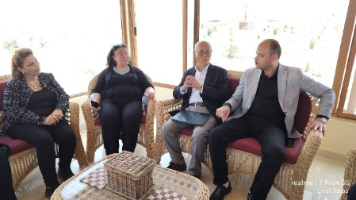
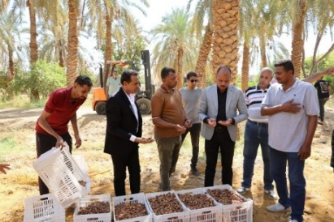
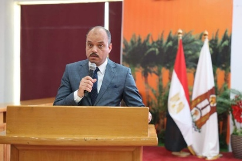
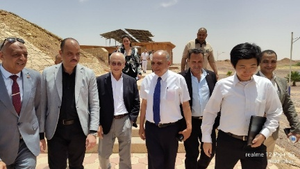
2- قطاع الصحة والتأمين الصحي
المشروعات الجاري إنشاؤها والتخطيط لها
- إنشاء مستشفى جامعي مستقل : تم تسليم الأرض لبدء التنفيذ، بالإضافة لتوفير أرض سكن أطباء المستشفى الجامعي.
- إنشاء مركز صحة وتنيمة الأسرة بالكفاح: تم التنفيذ بنسبة 100% بتكلفة تصل الي 65 مليون جنية.
- وحدة طب الأسرة بالقصر: تم التنفيذ بنسبة 100% بتكلفة تصل الي 65 مليون جنية.
- متابعة انشاء مشروع مستشفي الداخلة العام: بتكلفة تصل الي 630 مليون جنية
- متابعة انشاء مشروع مستشفي الفرافرة المركزي: بتكلفة تصل الي 625 مليون جنية
- إنشاء مركز لعلاج الإدمان: بدء إجراءات إنشاء أول مركز متخصص.
- تطوير مستشفى باريس المركزي ومستشفى بلاط المركزي: دراسة إنشاء جناح عمليات وجناح ولادة بمشتملاتهم بالشراكة مع القطاع الخاص.
الدعم المالي المباشر والقرارات
- تقديم دعم مالي من المحافظة للقطاع الصحي: 4 ملايين جنيه خلال العام المالي الحالي.
- إصدار 3,429 قرار علاج على نفقة الدولة بتكلفة: 5.18 مليون جنيه (5,180,007 جنيه).
الاجتماعات والجولات
تم تنفيذ عدد (5) جولات، شملت:
( مستشفى الخارجة التخصصي- مستشفى الحميات- مقر مديرية الشئون الصحية السابق- مبنى العيادات الخارجية الجديد الملحق بفرع التأمين الصحي- متابعة الخدمات الصحية بالفرافرة).
وتم عقد عدد (3) اجتماعات ولقاءات بشأن:
- دعم وتطوير منظومة التمريض والتعليم الفني للتمريض.
- متابعة الاستعدادات لحملة التبرع بالدم.
- بحث احتياجات القطاع الصحي وسبل دعم الخدمات الطبية بالمحافظة.
أهم الجولات
- افتتاح أول فرع لصيدلية الإسعاف بمركز الخارجة: المشاركة في افتتاح الفرع لدعم إتاحة الخدمات الدوائية للمواطنين.
- جولات متابعة حملة التبرع بالدم: متابعة الاستعدادات والتنظيم، وتوفير نقاط ثابتة ومتحركة لاستقبال المتبرعين، تشمل مستشفى الخارجة التخصصي ومستشفى الداخلة العام وخمس سيارات متنقلة.
- جولة تفقدية لمقر مديرية الشئون الصحية السابق: ضمن الجولات الواردة في ملفات الإنجازات.
أهم الاجتماعات واللقاءات
- لقاء مع نقيب عام التمريض لبحث دعم وتطوير قطاع التمريض والتوسع في إنشاء مدارس فنية للتمريض بمركزي الخارجة والداخلة.
- اجتماع عبر تقنية الفيديو كونفرانس بشأن حملة التبرع بالدم.اجتماعات لمتابعة الموقف التنفيذي لمشروعات مياه الشرب والصرف الصحي، باعتبارها من المشروعات الخدمية المرتبطة بالصحة العامة.
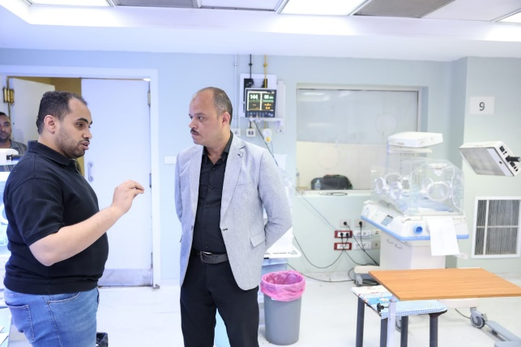
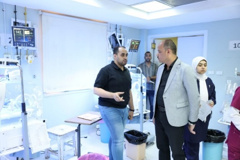
3- قطاع التعليم والأبنية التعليمية
أ. التربية والتعليم
أولاً: مبادرات ومشروعات ليها أثر مباشر
- إطلاق مبادرة "أنا متعلم مدى الحياة" بالتعاون مع اليونسكو (أولى فعالياتها بمدرسة المنيرة الابتدائية بالخارجة)
- مبادرة "اقرأ وعبّر" لتنمية القراءة لتلاميذ الابتدائي بالإدارات الخمس
- البرنامج العلاجي المجاني لتحسين مهارات القراءة والكتابة لتلاميذ الابتدائي خلال إجازة نهاية العام
- مبادرة "عظمة وجلال مصر" لاكتشاف المواهب الطلابية (بحضور نائب المحافظ في إطلاقها)
- مسابقة "عباقرة الوادي" بين المصالح الحكومية والمؤسسات الخيرية (بحضور نائب المحافظ في انطلاق تصفياتها)
- حصول التعليم على المركز الأول جمهورياً في الشهادات الممنوحة بمبادرة "مليون رخصة يومية"
- مبادرة زراعة النخيل والأشجار المثمرة وزيادة الرقعة الخضراء بالمدارس
- مبادرة تنجيل ملاعب المدارس
- مبادرة "إعداد 1000 معلم ليصبحوا مديري مدارس"
- دعم تدريس البرمجة والذكاء الاصطناعي لطلاب الصف الأول الثانوي، وتسليم 100 شهادة عبر منصة Qureo اليابانية
- برنامج "نحو حياة تكنولوجية أفضل" لطلاب الصف الرابع الابتدائي حتى الثاني الثانوي
ثانيا: التعليم الفني والتعاون مع القطاع الخاص
- توقيع بروتوكول إنشاء "مدرسة فوسفات مصر والتكنولوجيا التطبيقية" (أول مدرسة من نوعها جمهورياً)
- تنفيذ التعليم والتدريب المزدوج بالتعاون مع الوكالة الألمانية GIZ، وتدريب المعلمين عليه
- متابعة التدريبات العملية الصيفية لطلاب التعليم الفني
- دعم المدارس الزراعية وتفعيل وحداتها الإنتاجية
ب. مشروعات الإنشاء الجديد (الأبنية التعليمية)
مشروعات منفذة بنسبة 100% (إجمالي التكلفة 122.65 مليون جنيه)
- إنشاء مدرسة المنيرة إعدادي: 19.8 مليون جنيه.
- إنشاء مدرسة السلام إعدادي: 16.7 مليون جنيه.
- إنشاء مدرسة صلاح الدين الابتدائية: 24.14 مليون جنيه.
- إنشاء مدرسة باريس ابتدائي إعدادي: 14.01 مليون جنيه.
- إنشاء مدرسة عدن الابتدائية: 18.51 مليون جنيه.
- إنشاء مدرسة الشيخ مفتاح: 14.29 مليون جنيه.
- إنشاء مدرسة أبو بكر الصديق: 15.2 مليون جنيه.
مشروعات جاري العمل بها
- إنشاء مدرسة المتفوقين للعلوم والتكنولوجيا (STEM): نسبة التنفيذ 76% - التكلفة 89.97 مليون جنيه.
- إنشاء المدرسة المصرية اليابانية بالداخلة: نسبة التنفيذ 5% - التكلفة 85.81 مليون جنيه.
- إنشاء مدرسة الناضورة تعليم أساسي: نسبة التنفيذ 38% - التكلفة 20.2 مليون جنيه.
- إنشاء مدرسة الراشدة الإعدادية: نسبة التنفيذ 7% - التكلفة 7.37 مليون جنيه.
- مدرسة البليدة تعليم أساسي: نسبة التنفيذ 8% - التكلفة 9.54 مليون جنيه (جاري سحب الأعمال).
ب. مشروعات الصيانة التعليمية
مشروعات صيانة منفذة بنسبة 100% (إجمالي التكلفة 18.73 مليون جنيه)
- ناصر للتعليم الأساسي المشترك: 7.3 مليون جنيه.
- الخارجة الإعدادية المشتركة: 3 ملايين جنيه.
- بئر العبد الابتدائية المشتركة: 2.8 مليون جنيه.
- افطيمة تعليم أساسي: 2 مليون جنيه.
- الحرية للتعليم الأساسي: 0.9 مليون جنيه.
- موط الثانوية بنات: 0.8 مليون جنيه.
- طريق الداخلة تعليم أساسي: 0.76 مليون جنيه.
- موط الثانوية الزراعية: 0.6 مليون جنيه.
- الخارجة الرسمية لغات (جميع المراحل): 0.3 مليون جنيه.
- الخارجة بنين: 0.27 مليون جنيه.
مشروعات صيانة جاري العمل بها
- صيانة مدرسة الشهيد أحمد المنسي: نسبة التنفيذ 47% - التكلفة 7.5 مليون جنيه.
- صيانة مدرسة السلام ب: نسبة التنفيذ 85% - التكلفة 5.4 مليون جنيه.
- صيانة مدرسة صنعاء الابتدائية: نسبة التنفيذ 75% - التكلفة 5.2 مليون جنيه.
- صيانة مدرسة الشيخ والي تعليم أساسي: نسبة التنفيذ 10% - التكلفة 4.8 مليون جنيه.
- صيانة مدرسة بورسعيد: نسبة التنفيذ 50% - التكلفة 2.9 مليون جنيه.
- صيانة مدرسة إيجرو الإيطالية الزراعية: نسبة التنفيذ 90% - التكلفة 2.1 مليون جنيه.
تجهيزات ودعم التعليم
- تجهيز عدد 9 مدارس (معامل ورياض أطفال): بتكلفة 5 ملايين جنيه.
- دعم مالي من المحافظة لتطوير التعليم والصيانة: 17 مليون جنيه خلال العام الحالي.
- مدارس تكنولوجية جديدة: إنشاء/تشغيل مدارس تكنولوجية بدعم الشركات والشراكات (WE للاتصالات، المدرسة الدولية للتعدين، مدرسة الطاقة الشمسية، مدرستين زراعيتين بالخارجة والداخلة، ومدرستي تمريض خاصة).
الاجتماعات والجولات
تم تنفيذ عدد (9) جولات، شملت:
- متابعة انتظام العملية التعليمية بعدد من مدارس الخارجة.
- متابعة امتحانات صفوف النقل.
- متابعة امتحانات الثانوية العامة بمدرستي بلاط الثانوية وموط.
- متابعة امتحانات الدبلومات الفنية.
- متابعة امتحانات الشهادة الثانوية الأزهرية.
- تفقد عدد من المدارس برفقة نائب وزير التربية والتعليم.
وتم عقد اجتماع بشأن متابعة ملفات التعليم والتنسيق مع القيادات التعليمية بالمحافظة.
أهم الجولات
- جولة تفقدية للمدارس استعدادًا للعام الدراسي الجديد: شملت عددًا من المدارس التابعة لإدارة الخارجة التعليمية، ومراكز تنمية القدرات الصيفية بالمدرسة المصرية اليابانية، ومدرسة طريق الداخلة للتعليم الأساسي.
- متابعة الاستعداد لدخول مدرسة أجرو المصرية الإيطالية الخدمة: تفقد المدرسة باعتبارها مدرسة تكنولوجية تطبيقية متخصصة في المجال الزراعي، مقرر دخولها الخدمة لأول مرة خلال العام الدراسي المقبل.
- متابعة تجهيز مدرسة فوسفات مصر للتكنولوجيا التطبيقية: الوقوف على الاحتياجات والتجهيزات اللوجستية اللازمة لاستكمال تجهيز المدرسة تمهيدًا لاستقبال الطلاب.
- متابعة أعمال التشطيبات بمعهد الوادي الجديد العالي لتكنولوجيا المعلومات والاتصالات: الوقوف على معدلات التنفيذ، تمهيدًا لدخوله الخدمة مع بداية العام الدراسي المقبل.
- جولات متابعة امتحانات الثانوية العامة والدبلومات الفنية، ومتابعة انتظام العملية التعليمية.
أهم الاجتماعات واللقاءات
- لقاء مع نقيب عام التمريض لبحث إنشاء مدرستين فنيتين للتمريض بنظام الخمس سنوات بمركزي الخارجة والداخلة.
- اجتماع مع قيادات التعليم بالمحافظة لمتابعة ملفات القطاع والاستعدادات للعام الدراسي.
- توقيع بروتوكول إنشاء مدرسة فوسفات مصر للتكنولوجيا التطبيقية بالتعاون بين وزارة التربية والتعليم والتعليم الفني وشركة فوسفات مصر.
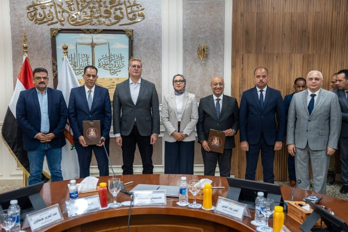
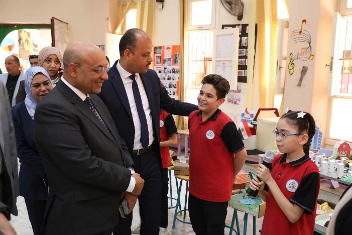
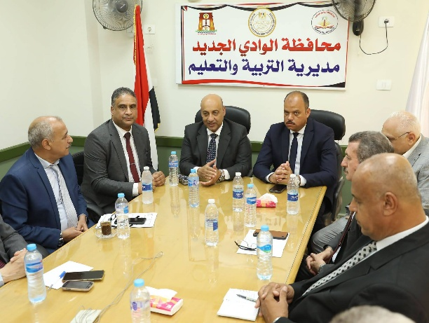
4- قطاع الثقافة
أولاً: حجم النشاط الثقافي
- تنظيم 90 فعالية ثقافية وفنية وأدبية خلال فبراير (محاضرات، ندوات، ورش حكي، ورش فنية، أمسيات أدبية، عروض فنية)
- تنفيذ برنامج "ليالي رمضان 1447" بـ 55 فعالية ثقافية وفنية وقوافل خلال مارس
- تنفيذ 6 قوافل ثقافية وفنية ضمن برنامج رمضان
ثانياً: التميز والمشاركات على مستوى الجمهورية
- حصول مكتبة الطفل والشباب بالفرافرة على المركز الثالث جمهورياً كأفضل موقع ثقافي (الدورة الرابعة)
- مشاركة شباب المحافظة في ملتقى "أهل مصر" للشباب بالأقصر (9 - 14 فبراير)
- مشاركة فرقة الوادي الجديد للفنون الشعبية في الملتقى الثاني لفنون البادية بالعريش (27 - 29 أبريل)
ثالثاً: الوصول للقرى والمناطق الأكثر احتياجاً
- تنظيم قوافل المسرح المتنقل بقرى شرق بولاق وعبد السلام عارف، تضمنت اكتشاف المواهب وورش الحرف التراثية ومنافذ بيع الكتب
- دمج الخدمات الطبية بالقوافل بالتعاون مع كليتي الطب والتمريض بجامعة الوادي الجديد ومديرية الشئون الصحية (مبادرة 100 مليون صحة)
- تنظيم قوافل ثقافية وفنية بالقرى والمراكز ضمن برنامج رمضان
رابعاً: التوعية بالقضايا المجتمعية
- مبادرة "جيل واعي.. وطن أقوى": محاضرات لتمكين الشباب والتنوع الثقافي ومكافحة الإدمان
- عرض مسرحية “7 ورقات كوتشينة” لمناقشة قضايا العنف ضد المرأة (لفرقة قصر ثقافة الخارجة)
خامساً: دعم الأطفال وذوي الهمم
- تنظيم استعراضات وورش فنون تشكيلية مخصصة لأطفال ذوي الهمم ضمن احتفالية ذكرى تحرير سيناء
- تقديم عرض "صيادة الأحلام" للأطفال بقصر ثقافة موط وورش الحكي
سادساً: الحفاظ على الهوية والتراث الواحاتي
- عروض التراث الواحاتي بميدان المجمع الإسلامي بموط (فرقة موط للفنون التلقائية)
- عروض التراث بميدان جمال عبد الناصر بالخارجة (البلح، الخزام، البادية، المزمار البلدي، الموشحات، التنورة)
- معارض الحرف اليدوية والتراثية بالاحتفال بالمولد النبوي
سابعاً: احتفالات كبرى بالتعاون مع جهات أخرى
- احتفالية ليلة القدر بسينما هيبس بالتعاون مع مديريتي الأوقاف والتربية والتعليم، وتكريم حفظة القرآن الكريم
- استضافة عرض "الليلة الكبيرة" لفرقة القاهرة للعرائس ومعرض "تجربة شخصية" للفنون التشكيلية، ومنافذ بيع إصدارات الهيئة العامة لقصور الثقافة والهيئة العامة للكتاب (11 - 14 أبريل)
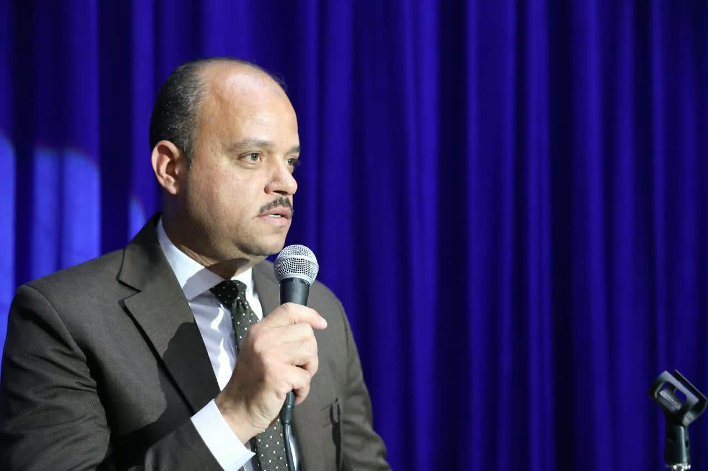
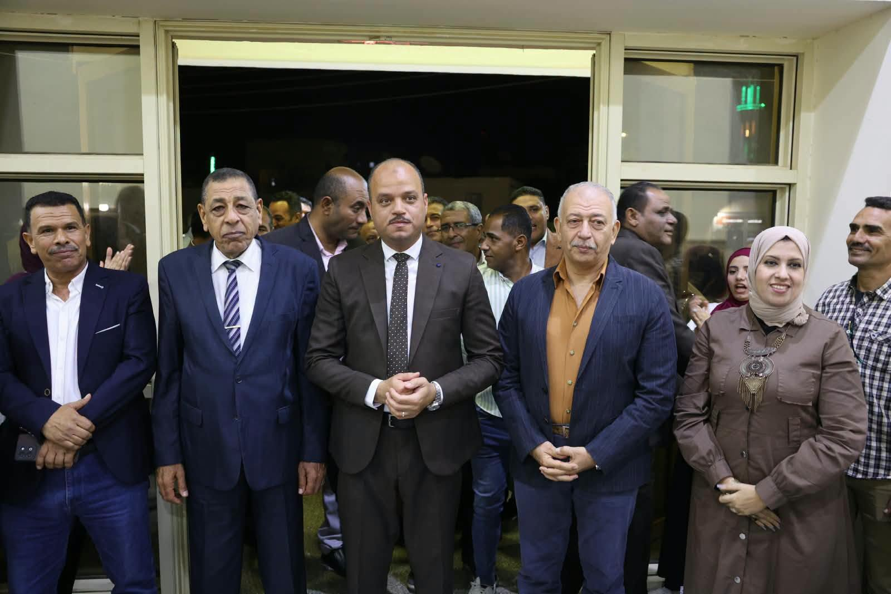
5- قطاع التموين
أولاً: مشروعات البنية التحتية
- إنشاء مجمع تموين القصر بالداخلة، نسبة التنفيذ 100% (12,377,000 جنيه)
- إنشاء مبنى إدارة تموين باريس، نسبة التنفيذ 70% (9,485,365 جنيه)
ثانياً: الرقابة التموينية
- حملات تفتيش مكثفة بالتعاون مع هيئة سلامة الغذاء وجهاز حماية المستهلك ومباحث التموين ومجلس المدينة والطب البيطري
- المرور على 2,645 منشأة
- تحرير 330 محضر مخالفة للمخابز
- تحرير 1,734 محضر مخالفة للأسواق
- الانتهاء من رفع الإحداثيات المكانية (GIS) للمخابز وتجار التموين ومنافذ "جمعيتي"
- تطبيق منظومة "كارت المفتش" لضبط منظومة الخبز وجرد الدقيق، تمهيداً لتطبيق الخصم المباشر
ثالثاً: توفير السلع بأسعار مخفضة
- تنفيذ مبادرة "أهلاً رمضان" بالتعاون مع القطاع الخاص
- تنفيذ مبادرة "أهلاً مدارس" بالتعاون مع القطاع الخاص
- تشغيل المجمع الاستهلاكي للسلع الاستهلاكية بمجمع المصالح الحكومية (بالتعاون مع شركة غزل المحلة وأصحاب المشروعات الصغيرة)
- تشغيل المجمع الاستهلاكي للسلع المعمرة بالتعاون مع الجمعية الفئوية بالمحافظة
- إطلاق تطبيق "رادار الأسعار" على مواقع التواصل الاجتماعي لمتابعة أسعار السلع الأساسية
رابعاً: دعم منظومة الخبز
- إعادة تشغيل مخبز "الغناي" بمركز بلاط
- إعادة تشغيل مخبز مجلس المدينة بالخارجة
- تشغيل مخبز متنقل بقرية الشب بحصة دقيق شهرية 3 طن
خامساً: توريد القمح
- حصول المحافظة على المركز الثاني على مستوى الجمهورية في توريد القمح المحلي
سادساً: خدمات المواطنين والبطاقات
- استخراج 2,655 بطاقة تموينية (بدل فاقد وتالف وفصل اجتماعي)
- استقبال 697 تظلماً من المواطنين الموقوفين وفق محددات العدالة الاجتماعية
- استقبال 373 شكوى عبر منظومة الشكاوى الحكومية الموحدة ومواقع التواصل وحلها بالكامل
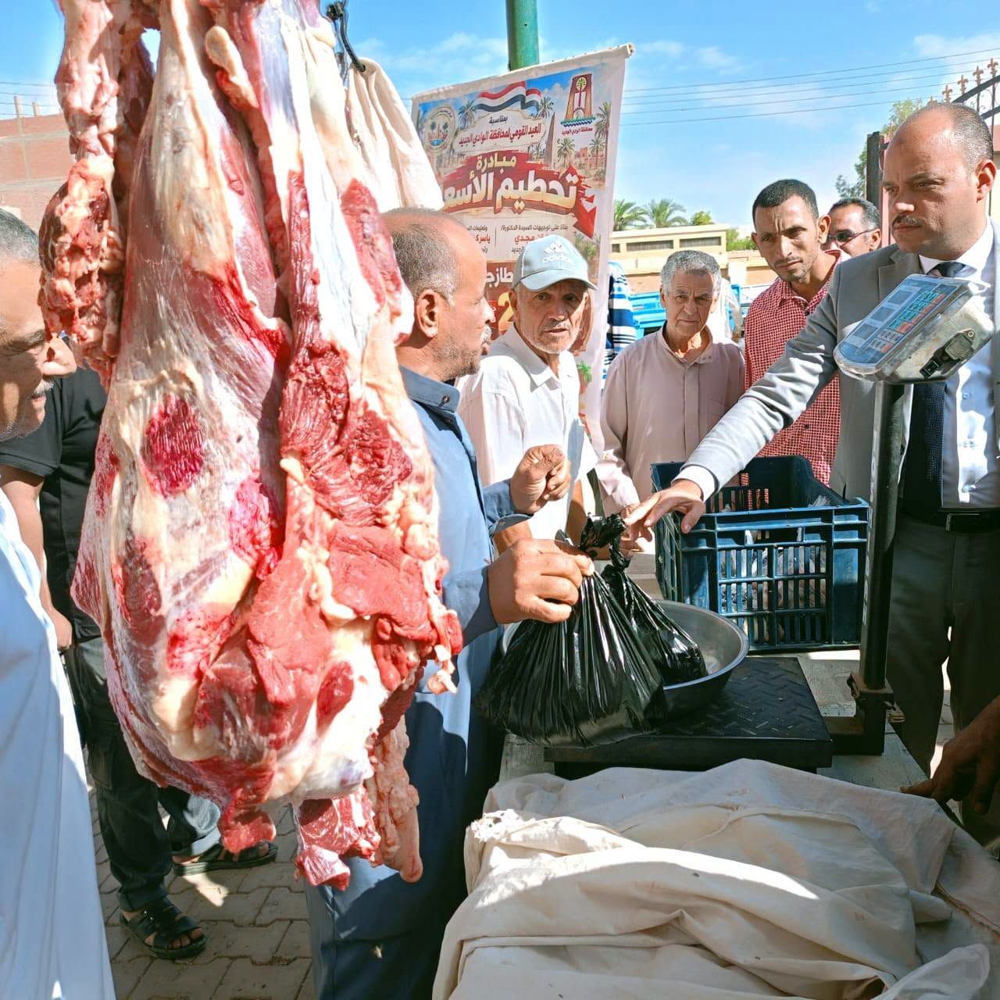
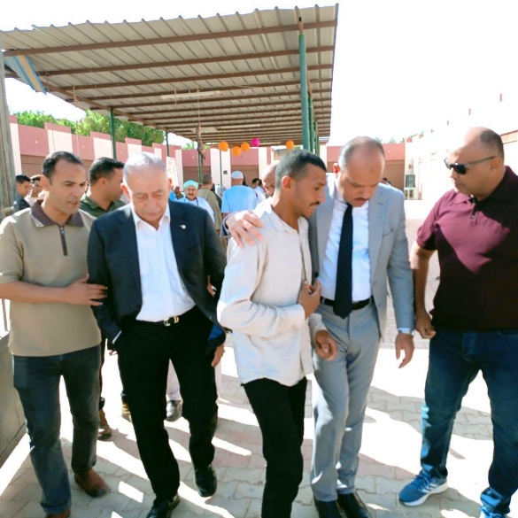
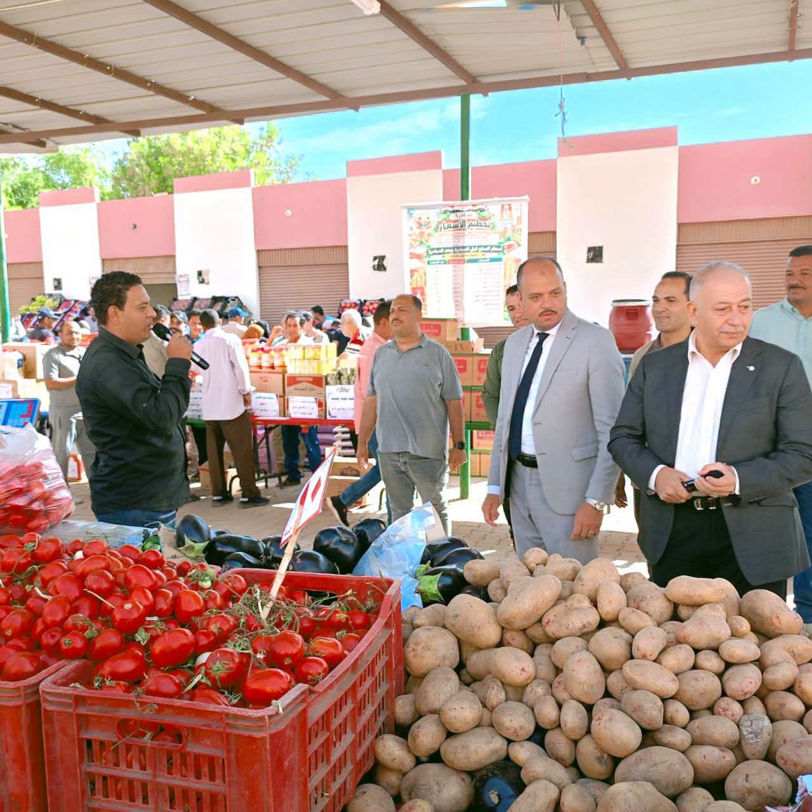
6- قطاع الشباب والرياضة
أولاً: حجم القطاع
- إجمالي عدد مراكز الشباب: 79 مركز شباب
- إجمالي عدد الأندية الرياضية: 17 نادياً
- إجمالي الهيئات الشبابية والرياضية بالمحافظة: 96 هيئة
- عدد الإدارات الفرعية: 5 إدارات على مستوى المحافظة
ثانياً: الاستثمار والمشروعات
- إجمالي حجم الاستثمار: 2,000,000 جنيه (مخصصة لتطوير البنية الأساسية بمركز التنمية الشبابية بالخارجة)
- إجمالي المشروعات المنفذة والجارية والمطروحة: نحو 58.3 مليون جنيه
ثالثاً: المبادرات الشبابية والكشفية
- مبادرة "نتشارك" لتنمية وبناء قدرات الشباب
- مبادرة "حضنك أقوى للنشء" لرعاية النشء والشباب
- مبادرة "حرفتك مهنتك" للتدريب المهني على الحرف اليدوية (الخوص، الرسم على الرمال، الطباعة، التفصيل والخياطة، الكليم والسجاد)
- حملات "حِل واطمن" ومشروعات خدمة البيئة والمجتمع بفرق الجوالة
- برامج وخطط مواجهة الأزمات والكوارث بفرق الجوالة
- المعسكرات الكشفية والبطولات الرياضية
رابعاً: مشروعات منفذة ودخلت الخدمة بنسبة 100%
- إنشاء 4 ملاعب خماسية: نادي الفوسفات بالخارجة (3.4 مليون)، نادي التعمير بالداخلة (3.3 مليون)، نادي التعمير بالخارجة (3 مليون)، قرية اللواء صبيح بالفرافرة (2.6 مليون)
- إنشاء ملعب مفتوح بقرية بئر العبيد بالداخلة (3.3 مليون)
- إنشاء 3 مبانٍ للأنشطة والخدمات: مركز شباب مستقبل الوادي بالخارجة (5 مليون)، ومركز شباب المعسكر بالداخلة (3.5 مليون)، ومركز شباب الجيزة بالداخلة (3.5 مليون)
- إنشاء سور بطول 230م وبوابات وغرف أمن بمركز التنمية الشبابية بالخارجة (5 مليون)
خامساً: مشروعات جاري تنفيذها
- إنشاء حمام سباحة تدريبي بمركز شباب بلاط، نسبة التنفيذ 80% (9 مليون)
- إنشاء ملعب مفتوح بقرية عين القرشي بالداخلة، نسبة التنفيذ 75% (3.5 مليون)
- تطوير الملعب الخماسي بنادي الداخلة الرياضي، نسبة التنفيذ 75% (1.7 مليون)
سادساً: مشروعات جاري طرحها والبدء بها
- استكمال وحدة مدرجات بنادي الداخلة الرياضي (5 مليون)
- إنشاء سور وبوابة بمركز شباب مستقبل الوادي بالخارجة (2 مليون)
- إنشاء سور وبوابة بمركز شباب الزهور بالخارجة (2 مليون)
- تطوير ورفع كفاءة إنارة الملعب الكبير لكرة القدم بالاستاد (2.5 مليون)
سابعاً: الدعم المالي للهيئات والأنشطة
- تخصيص 83 ألف جنيه لفريق اللياقة البدنية
- دعم 50 ألف جنيه لكل جهة من: نادي الهنداو، ونادي الشبان المسلمين، ومنطقة الميني فوت بول، ونادي الوادي الجديد
ثامنا: الجولات والاجتماعات
تم تنفيذ عدد (2) جولة، شملت:
- المدينة الشبابية بمركز ومدينة الخارجة.
- مركز الشباب والاستاد الرياضي.
وتم عقد عدد (3) اجتماعات ولقاءات بشأن:
- تنفيذ ملتقى توظيف وتدريب الشباب بالتعاون مع الوكالة الألمانية.
- عرض مشكلات الشباب ومناقشة الحلول المقترحة مع أعضاء مجلس الشيوخ.
- بحث مشاركة وفد مؤسسة شباب المتوسط في مؤتمر الشباب المحلي للتغير المناخي.
أهم الجولات
- جولات متابعة الأنشطة والمشروعات الشبابية والرياضية
- متابعة الفعاليات والأنشطة المرتبطة بتمكين الشباب، والمشاركة في المبادرات التي تستهدف تنمية قدراتهم.
أهم الاجتماعات واللقاءات
- اجتماع تنسيقي لتنفيذ ملتقى توظيف وتدريب الشباب –: متابعة الترتيبات النهائية لإطلاق الملتقى بالتعاون مع الوكالة الألمانية للتعاون الدولي «GIZ»، ضمن برنامج «THAMM Plus».
- لقاء وفد مؤسسة شباب المتوسط للتنمية –: بحث آليات مشاركة المحافظة في مؤتمر الشباب المحلي للتغير المناخي 2026.
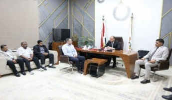
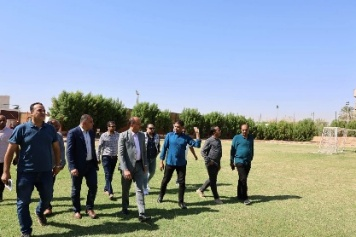
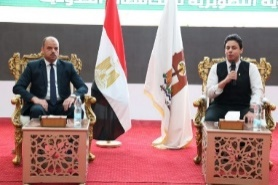
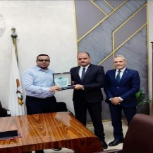
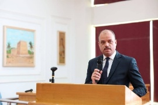
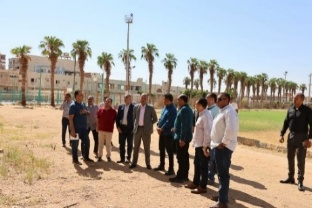
7- قطاع الطرق
الطرق الداخلية :
- مركز الخارجة: رصف شارع نادي الخارجة الرياضي وميدان البريد، بنسبة تنفيذ 100%، والانتهاء من أعمال الطبقة السطحية الأسفلتية.
- رصف شارع امتداد مستشفى الصدر حتى مدرسة المجاهدين، بنسبة تنفيذ 100%، والانتهاء من أعمال الطبقة السطحية الأسفلتية.
- فتح ورصف طريق خدمي بجوار المدرسة الدولية بالخارجة، حفاظًا على سلامة الطلاب.
- رصف طريق بهنوس بالخارجة، حفاظًا على سلامة المواطنين.
- رصف حي المجاهدين ببلاط الإنترلوك ضمن الخطة الاستثمارية للعام المالي 2026–2027؛ مدة التنفيذ ثلاثة أشهر، وتاريخ استلام الموقع 1/10/2026، ونسبة التنفيذ 45%.
- رصف شارع أرض النور بالأسفلت؛ مدة التنفيذ شهر ونصف، ونسبة التنفيذ 80%.
- رصف شارع شدوه بأرض السلام بالأسفلت، مدة التنفيذ شهر ونصف، والموقف التنفيذي الوارد: «جارٍ البدء في الأعمال»
- مركز الداخلة: رصف شارع الشيخ والي–المعصرة، بنسبة تنفيذ 100%.
- مركز الداخلة: استكمال رصف الطريق العام لقرية أسمنت، بنسبة تنفيذ 100%.
- مركز الفرافرة: رصف شارع جمال عبد الناصر وميدان المسلة، بنسبة تنفيذ 100%، والانتهاء من أعمال الطبقة السطحية الأسفلتية.
- مركز بلاط: رصف الطريق المتجه شمالًا بحي شرق بلاط، من مدخل قرية الفتح حتى شمال أولاد عزوز بمدينة بلاط، بنسبة تنفيذ 100%، والانتهاء من أعمال الطبقة السطحية الأسفلتية.
- مركز باريس تنفيذ مشروعات رصف ببلاط الإنترلوك
الطرق الخارجية
- إنشاء ورصف محور الخارجة سوهاج (المرحلة الأولى): بطول 117 كم، بتكلفة تقديرية 1700 مليون جنيه، ونسبة تنفيذ 57%.
- إنشاء ورصف محور الخارجة–سوهاج (المرحلة الثانية): بطول 25 كم، بتكلفة تقديرية 661.39 مليون جنيه، ونسبة تنفيذ 35%.
- إنشاء ورصف طريق مدخل الاستثمار الزراعي بمفيض باريس: بطول حوالي 40 كم، بتكلفة تقديرية 224 مليون جنيه، ونسبة تنفيذ 87%.
- المرحلة الأخيرة من محور تنيدة–منفلوط: بطول 200 كم، بتكلفة تقديرية 2000 مليون جنيه، ونسبة تنفيذ 100%.
رفع كفاءة طريق باريس–العوينات، من قرية درب العوينات حتى مدخل بحيرة المفيض موزعًا على أربعة قطاعات:
القطاع الأول: بطول 31.750 كم بتكلفة تقديرية 201.655 مليون جنيه.
القطاع الثاني: بطول 31.750 كم، بتكلفة تقديرية 206.835 مليون جنيه.
القطاع الثالث: بطول 31.750 كم بتكلفة تقديرية 219.892 مليون جنيه.
القطاع الرابع: بطول 31.750 كم، بتكلفة تقديرية 225.129 مليون جنيه.
الجولات والاجتماعات
تم تنفيذ عدد (4) جولات، شملت:
- طريق الخارجة/الداخلة ومتابعة أعمال رفع الكفاءة.
- طريق باريس/العوينات وأعمال الرفع المساحي.
- مدخل بحيرة باريس.
- طريق الشيخ والي–المعصرة–أسمنت بمركز الداخلة.
وتم عقد عدد (1) اجتماع بشأن دراسة إعادة تقوية وتوسعة طريق الخارجة/الداخلة.
أهم الجولات
جولة متابعة تطوير ورفع كفاءة طريق الخارجة/الداخلة –:
- متابعة الأعمال بالقطاع من الكيلو 120 إلى الكيلو 140، والوقوف على معدلات التنفيذ، التي بلغت نحو 28%، والتأكيد على سرعة استكمال الأعمال وفق المواصفات الفنية والمواعيد المحددة.
جولة متابعة تطوير موقف الأقاليم الجديد بمدينة الخارجة :
- متابعة تجهيز ورفع كفاءة موقف المروة السابق، تمهيدًا لتشغيله بديلًا لموقف السبط الحالي.
- جولة ميدانية لمتابعة أعمال رصف وتوسعة طريق الشيخ والي–المعصرة–أسمنت بمركز الداخلة.
- جولات متابعة أعمال رصف الطرق ورفع كفاءتها بالمناطق الداخلية.
أهم الاجتماعات
متابعة التنسيق التنفيذي بشأن مشروعات الطرق ورفع كفاءتها،
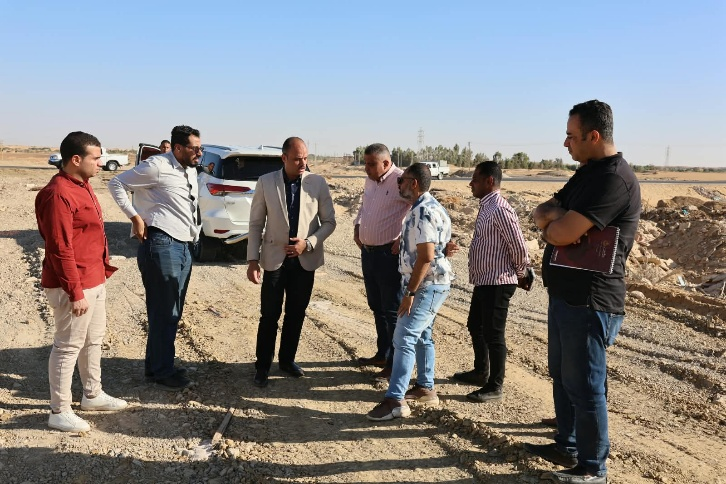
8- اهم الفعاليات
المشرف العام على تنظيم 95 فعالية أهمها:
زيارات الوزراء
زيارة وزيرة التنمية المحلية والبيئة
أبرز نتائج الزيارة:
- اعتماد منطقة كهف الجارة بمحافظة الوادي الجديد المحمية الطبيعية رقم 32 ضمن شبكة المحميات الطبيعية في مصر.
- وضع حجر الاساس مجمع صناعات التمورالمقام على مساحة 64 ألف متر مربع (بنسبة تنفيذ 30%) ويضم منظومة متكاملة لتصنيع وتعبئة التمور، بالإضافة إلى ثلاجات تخزين بطاقة 20 ألف طن ويعتمد التشغيل على نظم الري الحديث والطاقة الشمسية لتعظيم كفاءة الاستفادة من الموارد.
- افتتاح وحدة طب الاسرة و متابعة مستوى الرعاية الصحية المقدمة للأسر المستهدفة، في إطار المبادرة الرئاسية «100 مليون صحة»، بما يسهم في تيسير حصول المواطنين على الخدمات الطبية.يبلغ عدد سكان القرية نحو 5186 نسمة، بإجمالي 1037 أسرة مستهدفة.
- تفقد مشروعات حياة كريمة والمجمعات الصناعية.
- افتتاح مركز معلومات شبكات المرافق.
- تفقد مصنع شكائر الزماط.
- افتتاح مجزر الخارجة المطور بتكلفة 21.8 مليون جنيه (بطاقة 12 رأس ماشية/ساعة)، ويضم منظومة
- تفقد مشروع تطوير الموقف وأعمال إنشاء الموقف الإقليمي الجديد (بتكلفة 30 مليون جنيه على مساحة 9,316.5 م²)، والذي يستوعب 153 ميكروباص و7 أتوبيسات، ويضم مظلات انتظار، ومصلى، وخدمات تجارية وتشغيلية لتنظيم حركة المرور وتقليل التكدسات.
- افتتاح المركز التكنولوجي بديوان عام محافظة الوادي الجديد بمدينة الخارجة بعد التطوير (مقام على مساحة 286 م² بتكلفة نحو مليوني جنيه بتمويل ودعم من وزارة التخطيط)، لتقديم 25 خدمة رئيسية للمواطنين.
- تفقد مصنع تدوير المخلفات الزراعية والتأكيد على رفع كفاءة التشغيل وتعظيم الاستفادة من إمكانات المصنع، مع التركيز على التوسع في تدريب وتأهيل شباب الخريجين للعمل في مجالات تدوير المخلفات والصناعات الخضراء.
زيارة وزير البترول والثروة المعدنية
أبرز النتائج
- وضع حجر الأساس لمشروع إنتاج حمض الفوسفوريك بمنطقة أبو طرطور.
- توقيع بروتوكول إنشاء مدرسة فوسفات مصر للتكنولوجيا التطبيقية بالخارجة.
زيارة وزير الأوقاف
أبرز الفعاليات:
- افتتاح مسجد السبط الكبير.
- افتتاح مسجد عمر بن عبد العزيز.
- وضع حجر أساس مسجد على الطراز البيئي.
- افتتاح 3 مساجد عبر الفيديو كونفرانس.
ثانيًا: زيارات نواب الوزراء
نائب وزير التربية والتعليم لشؤون التعليم الفني
أبرز النتائج:
- المشاركة في توقيع بروتوكول إنشاء مدرسة فوسفات مصر للتكنولوجيا التطبيقية.
- جولة تفقدية لعدد من المدارس برفقة قيادات المحافظة،
نائب وزير الصحة والسكان
ابرز النتائج:
- بحث سبل تطوير مستشفى باريس، ومتابعة إنشاء مستشفى بلاط الجديد على مساحة 5 آلاف م²، ومناقشة التجهيزات النهائية لتشغيل مستشفى الداخلة الجديد قريباً لتعزيز الخدمات الطبية بالمركز والمراكز المجاورة.
- بحث احتياجات القطاع الصحي بالمحافظة، ومتابعة سير العمل بالمنظومة الصحية وتحديد الاحتياجات العاجلة للمستشفيات والمنشآت الطبية.
- مناقشة دعم خطة تطوير مستشفى باريس، ومتابعة إجراءات إنشاء مستشفى بلاط الجديد على مساحة 5 آلاف متر مربع.
- الاتفاق على دعم وتطوير معمل الصحة العامة بمدينة الخارجة، وتزويده بالأجهزة والمعدات المعملية المتخصصة لرفع كفاءة الفحوصات وتعزيز الرقابة الصحية والوقائية.
- متابعة الموقف التنفيذي لمستشفى الداخلة الجديد، والتجهيزات النهائية اللازمة لبدء تشغيله خلال الأشهر القليلة المقبلة.
- التأكيد على استمرار التنسيق مع وزارة الصحة والسكان، وسرعة تلبية الاحتياجات ذات الأولوية والارتقاء بمستوى الخدمات الطبية المقدمة للمواطنين.
العيد القومي
- عقد اجتماع لبحث الاستعدادات لاحتفالات العيد القومي للمحافظة الفيديو كونفرانس
- استقبال وزير الأوقاف بالوادي الجديد لافتتاح عدد من المساجد ووضع حجر الأساس لمسجد جديد بالتزامن مع احتفالات العيد القومي
- جولة تفقدية لمتابعة تجهيزات مبنى شبكات المواقع استعدادًا لافتتاح العيد القومي
- جولة تفقدية لمتابعة الاستعدادات والتجهيزات الخاصة باحتفالات العيد القومي للمحافظة
- حضور فعاليات الاحتفال بالعيد القومي الـ67 للمحافظة وذكرى انتصارات أكتوبر المجيدة
- تدشين القافلة الطبية المجانية بمركز الإشعاع الحضاري بالخارجة.
- حضور افتتاح مدرسة السلام الإعدادية بالخارجة وافتتاح مدرسة صلاح الدين الإعدادية.
- حضور إطلاق إشارة بدء «ماراثون الوادي» الرياضي وحضور احتفالية الاستاد الرياضي وعروض المظلات.
- حضور افتتاح حديقتين للأنشطة المفتوحة بالأحياء والاحتفالية الفنية على مسرح سينما هيبس بالخارجة.
- حضور فعالية إطلاق حزمة جديدة من المبادرات التنموية وتوقيع عدد من بروتوكولات التعاون مع نادي روتاري رواد أعمال القاهرة.
- استقبال وزير الأوقاف بالوادي الجديد لافتتاح عدد من المساجد ووضع حجر الأساس لمسجد جديد بالتزامن مع احتفالات العيد القومي (مثل: افتتاح مسجد عمر بن عبد العزيز بقرية المنيرة بالخارجة، وضع حجر الأساس لأول مسجد على الطراز البيئي المتكامل، افتتاح مسجد السبط الكبير بالخارجة، وافتتاح 3 مساجد عبر تقنية الفيديو كونفرانس).